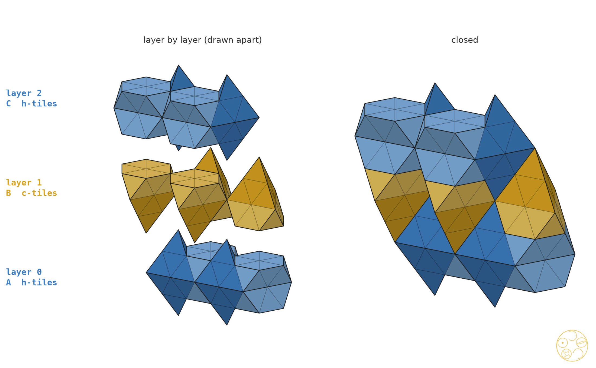
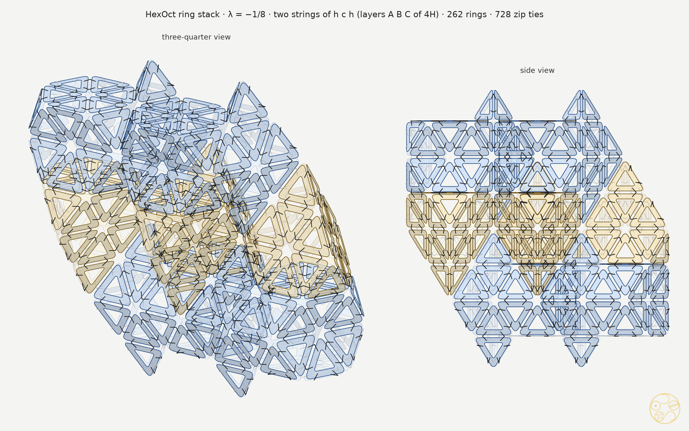

Six tiles of the 4H stacking at λ = −1/8, built from PET-bottle-cap security rings at double scale
In a stack every tile meets the tile above and the tile below in a hexagon: the two halves of one octahedron meet there. The question is whether these joints, and the joints to the next string, hold every piece in place.
A part is a piece of a tile that holds together by itself: the whole h-tile, or one tower of a c-tile. Two parts are joined when they share a wall of positive area; a shared point or edge does not count. All checks below are exact, in fractions, with the tile engine of #75 at λ = −1/8.
Tile to tile. In a string of 4H (ABCB, types h c h c) each tile is placed so that its lower octahedron half is the other half of the octahedron of the tile below. Then consecutive tiles meet in a full regular hexagon of side ½ (6 rings), checked corner by corner at all three joints. They also share one small triangle (1 ring): the top of a tetrahedron face of the lower tile lies against the other half of the octahedron. Nothing else touches over area.
The c-tile in a string. Its lower tower (half-octahedron with a tetrahedron on top) is joined to the tile below. Its upper tower (tetrahedron with a half-octahedron on top) is joined to the tile above. This is as the coordinator proposed. But the two towers still meet each other only at one point. So a string falls apart at every c-tile: the string h c h c is 3 separate pieces, and h c h is 2.
Strings side by side. The tetrahedra of a c-tile lean sideways on the octahedra of the next string, so a second string ties the towers together. We tried patches of 1, 2, 3, 4 and 7 strings (each string a lattice copy of the first):
| layers | strings | parts | joins | pieces | left over |
|---|---|---|---|---|---|
| h c h c (one period of 4H) | 1 | 6 | 3 | 3 | the string breaks at both c-tiles |
| h c h c | 2, 3, 4 (side by side) | 12–24 | 16–57 | 2–3 | an end tower of the top c-tile, held by one point |
| c h c h | 1 to 7 | 6–42 | 3–111 | 2–3 | the single string breaks; with more strings, one or two end towers of c-tiles stay loose |
| h c h | 1 | 4 | 2 | 2 | the string breaks at the c-tile |
| h c h | 2 | 8 | 11 | 1 | none: one piece |
| h c h | 3 (three ways) | 12 | 20 | 1 | none |
| h c h c h (a full period, closed by an h-tile) | 2 or 3 | 14 / 21 | 21 / 38 | 1 | none |
A c-tile at the end of a stack has one tower whose only full joint is the hexagon of the missing next tile; its sideways contacts in the patches we tried were points or edges. So the stack must begin and end with h-tiles. Choice: two strings of h c h, side by side (6 tiles: 4 h-tiles, 2 c-tiles). It is the smallest stack that shows both tiles and holds together as one piece, and every part is joined over area to at least one other part (11 joins among 8 parts). The next step up, to show a whole period of 4H, is two strings of h c h c h (10 tiles), also one piece.
Standing. The bottom is not flat. The lowest points are the tips of the two lower tetrahedra of the bottom h-tiles, half a layer below the bottom hexagons, and 2s apart (s = side of one ring triangle). On a table the stack rests on these two tips and falls over. Push the two tips into a block of foam, or through two holes in a box lid, at least 0.82s deep, until the two bottom hexagons sit on it. Height of the stack: 6.53s (four layers of the packing).

Build each tile with the nets of the tile build sheet, but do not build a wall twice: where a new tile meets one already built, use the wall that is there and tie the new rings to its rim.
| step | tile | rings of the tile | walls already there | new rings |
|---|---|---|---|---|
| 1 | layer 0 (A), h-tile, string 1 | 48 | — | 48 |
| 2 | layer 0 (A), h-tile, string 2 | 48 | 6 (side wall with step 1) | 42 |
| 3 | layer 1 (B), c-tile, string 1 | 60 | 7 (hexagon + small triangle on step 1) + 1 (step 2) | 52 |
| 4 | layer 1 (B), c-tile, string 2 | 60 | 7 (on step 2) + 1 (step 1) + 6 (side wall with step 3) | 46 |
| 5 | layer 2 (C), h-tile, string 1 | 48 | 7 (on step 3) + 1 (step 4) | 40 |
| 6 | layer 2 (C), h-tile, string 2 | 48 | 7 (on step 4) + 1 (step 3) + 6 (side wall with step 5) | 34 |
| total | 312 | 50 shared | 262 |
In step 3 and step 4 the c-tile's two towers are first held only at their touching corner. Close the lower tower onto the hexagon below, then close the upper tower; the tiles of steps 4 to 6 then join each tower over area to its neighbours.
Shared walls (each built once, tied to both tiles). Four hexagon joints between layers, each a regular hexagon of 6 rings plus one small triangle (28 rings). Three side walls between the two strings, one per layer, 6 rings each (18 rings). Four single small triangles between a tile and the next string one layer up or down (4 rings). Total 50 rings.
Zip ties. Two ties per ring side, through every ring that meets there. The stack has 364 ring sides: 318 where two rings meet, 34 where three meet and 12 where four meet (along the rims of the shared walls; there one tie goes through three or four rings). That makes 728 ties, against 936 for six separate tiles.

Conclusion. Build two strings of h c h side by side (layers A, B, C of 4H), at λ = −1/8: 6 tiles, 262 rings, 728 zip ties, saving 50 rings and 208 ties over separate tiles. One string never holds together, and a stack that ends in a c-tile leaves an end tower held by a point; two strings of h c h are the smallest stack that is one piece. It needs a foot for its two lower tips.
Status: done, exact; not for publication. Scripts in studies/2026-10-31-hexoct-ring-build/scripts: stack.py (strings, joints, contact test), stack_probe.py (patches), stack_build.py (counts, drawings); data in out/stack-build.json, out/stack_probe.txt, out/stack.log.